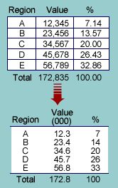

To effectively convey information from data, a table must accentuate the important features in the data (signal) and minimise the impact of other distractions (noise). This noise may be unimportant aspects of the data (data noise) or unnecessary ink used to draw it and a table should be formatted to avoid both.
Avoiding noise
Varying the spacing of rows and columns to group associated values is usually more effective than adding lines. Never use gridlines to box all values — they are non-data noise. Usually round values to 2 or 3 significant digits in tables — any further digits are data noise that make it harder to see patterns in the values. |
 |
Formatting to accentuate the signal
The eye can pick out patterns by scanning down a column of values more easily than by scanning across a row, so consider swapping the rows and columns to make the most meaningful comparisons down columns.
Reordering rows and columns can also accentuate the information in large tables. For example, if the rows correspond to different countries, ordering them alphabetically is rarely best — consider ordering them in more meaningful ways.